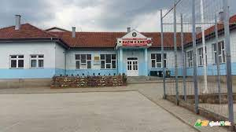

SHFMU "Nazim Hikmet" - Dobërçan
.jpg)
Historiku i shkurter i shkollës fillore,,Nazim Hikmet,,- Dobërçan dhe të paraleles së ndare fizike në Bukovik -
Elementet e para të shkollimit fillor në Dobërçan datojnë që nga viti i largët 1919,kur është ndertuar shkolla e parë me karakter fetar,që gjendej në oborrrin e ambulancës së sotme. Të dhënat tjera rreth kësaj shkolle fetare, nuk gjetëm perveç bisedave me fshataret më të vjetër,që treguan se kjo shkollë fetare është quajtur,,Medreseja e ulët,,, që për kushtet tona ishte një shkollë fillore,ku mësohej shkrim leximi arab.
Fillet e shkrimit të rregullt fillor në fshatin Dobërçan i hasim në vitin shkollor 1945/46,kur hapet edhe shkolla e parë shqipe. Në dokumentacionin e shkollës e gjeta ditarin e klasës së parë,që ishte i shtypur në gjuhën serbishte,kurse administrate ishte në gjuhën shqipe. Në bazë të shenimeve që i gjeta në ditar të klasës së parë(nuk kishte klasë tjera),figuronte se në klasën e parë të vitit shkollor 1945/46 ishin të regjistruar 137 nxënës,të moshave të ndryshme prej 7-15 vjeçar. Emrin apo mbiemrin e mësuesit të parë,nuk munda që ta gjej në ditar,por në vitin shkollor 1946/47 emri i mësuesit ishte Abdylaziz Kadriu,se a ishte po ky mësues një vit më parë nuk e di. Gjatë vitit shkollor 1948/49 mësimi edhe më tej mbahej në gjuhën shqipe,prej klasës së I-IV, kurse drejtor i shkollës figuronte Sejdi Hoxha nga Cerrnica. Në ditarin e punës po të këtij viti shkollor 1948/49,vërejtjet dhe çregjistrimet e nxënësve shkruheshin në gjuhën serbe,kurse libri i amzës ishte dy gjuhësor shqip-serbisht. Në vitin shkollor 1949/50 mësimi edhe më tej mbahej në gjuhën shqipe, kurse përkatësia kombetare e nxënësve,figuronte se janë turq apo rom. Në vitin shkollor 1950/51 i tërë procesi mësimor fillon të mbahet në gjuhën turke,kjo periudhë zgjatë deri në vitin shkollor 1958/59,kur ngadal fillon që të mbahet mësimi në gjuhën shqipe,nga klasa e parë e kështu me radhë deri sa arrin që të shëndrrohet në shkollë të plotë shqipe e turke prej klasës së I-VIII,që vazhdon deri më sot prej mësimit parafillor e deri në klasën e IX mësimi dy gjuhësor shqip e turqisht. Kur është në pyetje lokali shkollor dhe kuadri arsimor në shkollën amë në Dobërçan,janë bërë transformime të mëdha. Për disa vite me radhë mësimi është mbajtur në atë ,,Medresen,, që e përmenda të vitit 1919. Në kushte mjaft të vështira,sepse ky lokal nuk ishte paraparë për shkollë laike. Në atë ,,shkollë,,mësimi është mbajtur prej vitit shkollor 1945/46 e deri në vitin shkollor 1964/65,kur është ndërtuar pjesa e parë e shkollës ku jemi sot. Për shkak se numri i nxënësve rritej pa nderpre,në vitin shkollor 1978/79,ndërtohet edhe aneksi i dytë i ndërtesës shkollore,dhe këtë shkollë e kemi edhe sot,por tani të renovuar nga organizatat joqeveritare CDF Tika dhe komuniteti i fshatit. ----------------------------------------------------------------------------------------- Kur ishte në pyetje shkollimi fillor në Bukovik edhe këtu fillet datojnë nga viti shkollor 1945/46, kur ka filluar mësimi në klasën e parë në gjuhën shqipe. Mësuesi i parë në Bukovik kishte qenë Tefik Jakupi,i cili mësimin e kishte mbajtur në dy shkolla;Malishevë-Bukovik,në të njejtin vit shkollor. Prej vitit shkollor 1945/46 e deri në vitin shkollor 1953/54 mësimi është zhvilluar në ndërtesen e xhamisë së fshatit Bukovik, për fshatrat Bukovik-Capar. Në vitin shkollor 1953/54 është lëshuar për punë një nddertesë e re shkollore, me dy mësojtore, ku mësimi është zhvilluar prej klasës së I_IV për fshatrat Bukobik-Capar. Prej fillimit të punës së kësaj shkolle e deri në vitin shkollor 1970/71 shkolla ka qenë katër klasëshe,kurse në vitin shkollor 1970/71 është shëndrruar në shkollë peseklasëshe,më vonë gjashtklasëshe kurse në vitin shkollor 1994/95 u bë shkollë tetëklasëshe,në vitin shkollor 2008/09 u hap edhe klasa e IX në Bukovik. Në këtë vit 2008/09 u promovua edhe ndërtesa e re e shkollës, po në Bukovik.
Drejtoret e shkollës fillore,,NAZIM Hikmet" në Dobërçan,që nga viti shkollor 1945/46 e deri në vitin shkollor 2013/2014
1. Abdylaziz Kadriu 1945/46 -1948-49
2. Sejdi Hoxha 1948/49-1951/52
3. Sylejman Dindar 1952/53-1958/59
4. Haki Arifi 1959/60-61/62
5. Abedin Imami 1962/63-1966/67
6. Osman Hajrullahu 1967/68-1970/71
7. Kurtesh Ahmeti 1971/72-1973/74
8. Hysen Latifi 1974/75-1981/82
9. Aziz Omeri 1982/83-1989/90
10. Jetullah Bislimi 1990/91-2008/09
11. Faik Kastrati 2009 – 2012
12. Fadil Shabani (drejtor aktual)
Nese ke deshire te shkosh tek faqja e shkolles ne Facebook kliko logon e saj!
Nese doni te dine se kush ishte Nazim Hikmet klikoni linkun me poshte:
Nazim HikmetKeto jane disa foto te shkolles:
